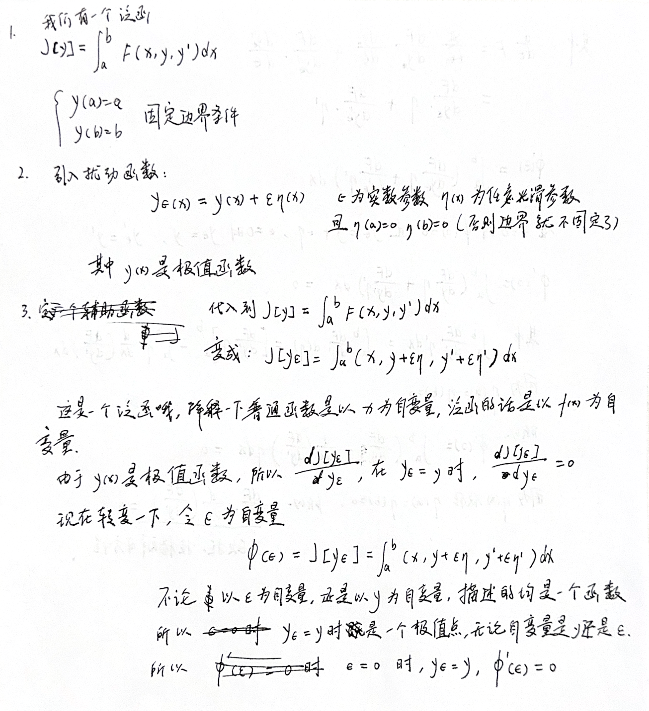
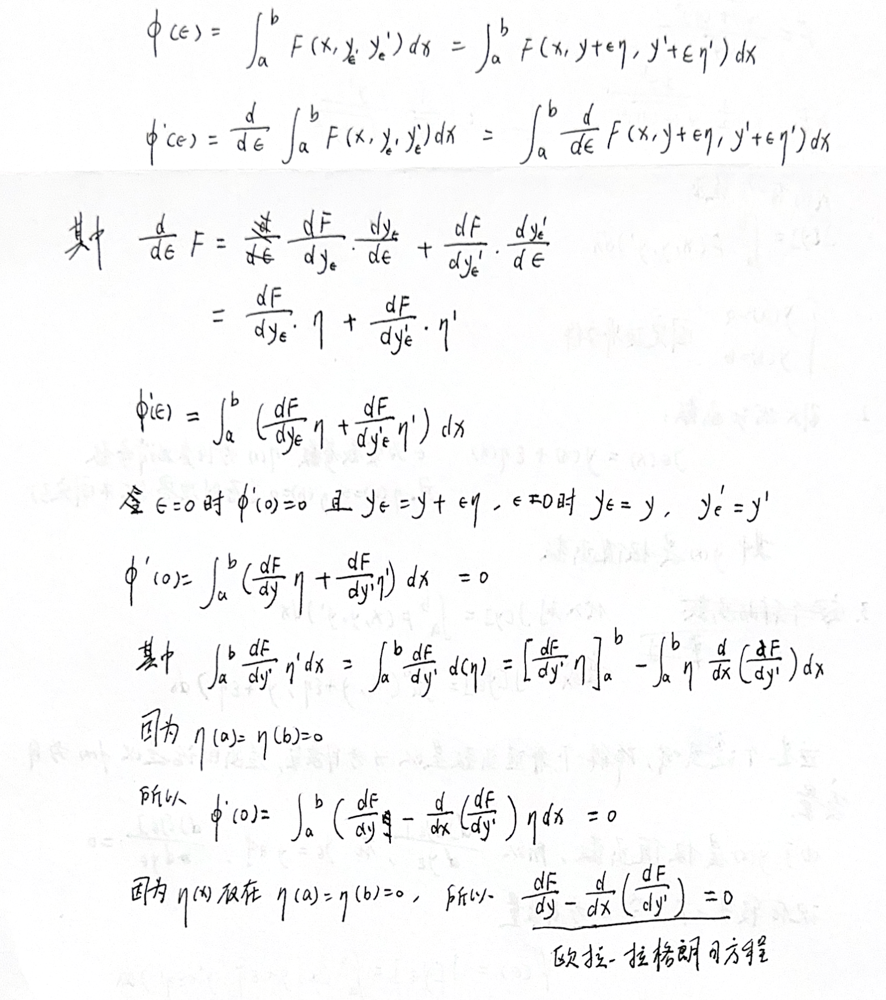
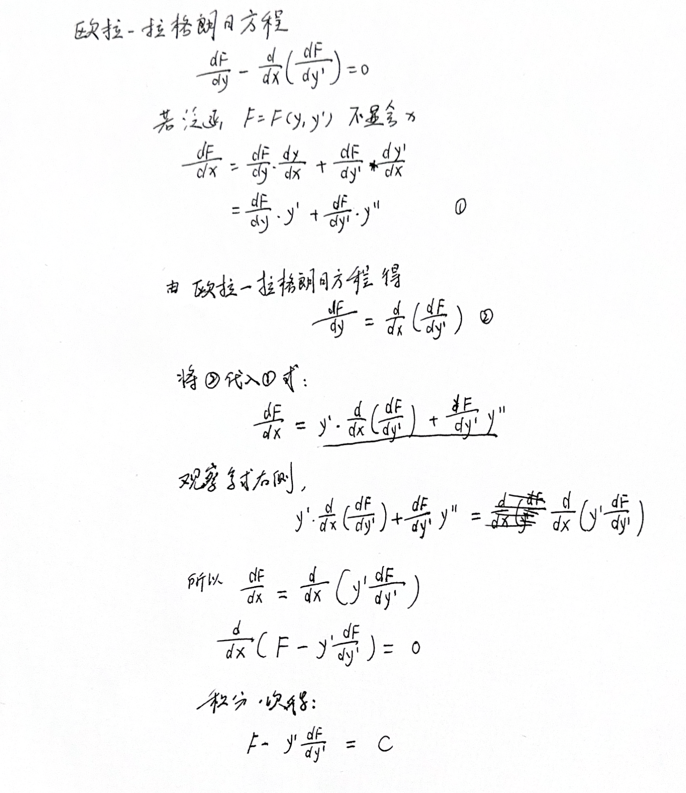
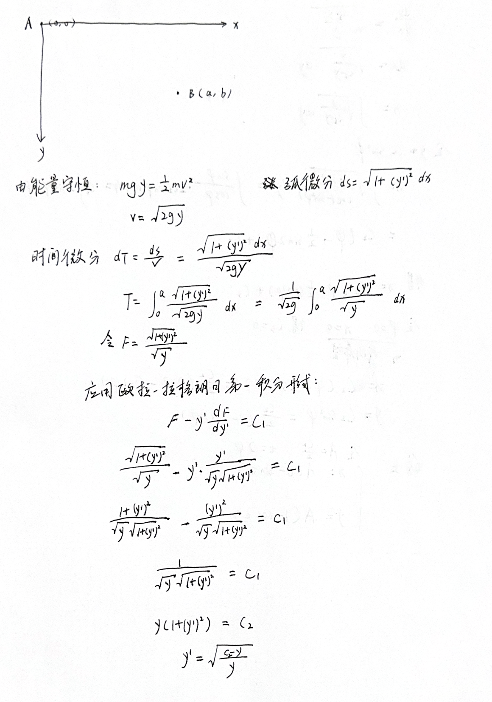
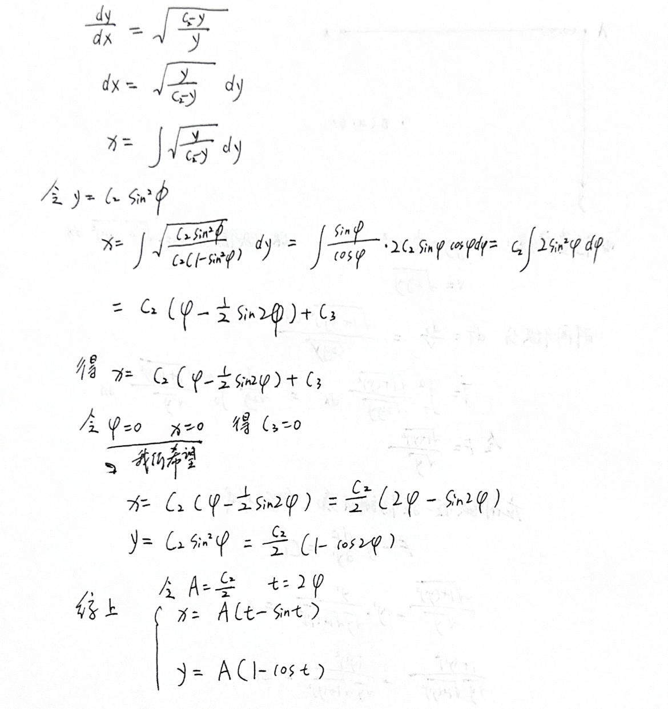
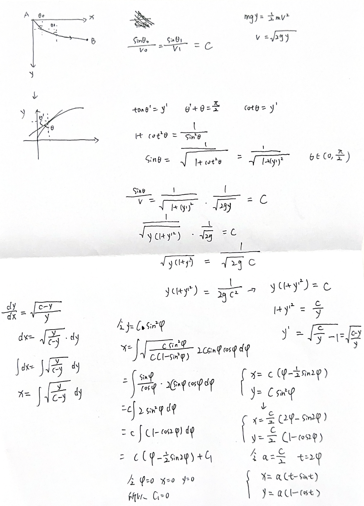
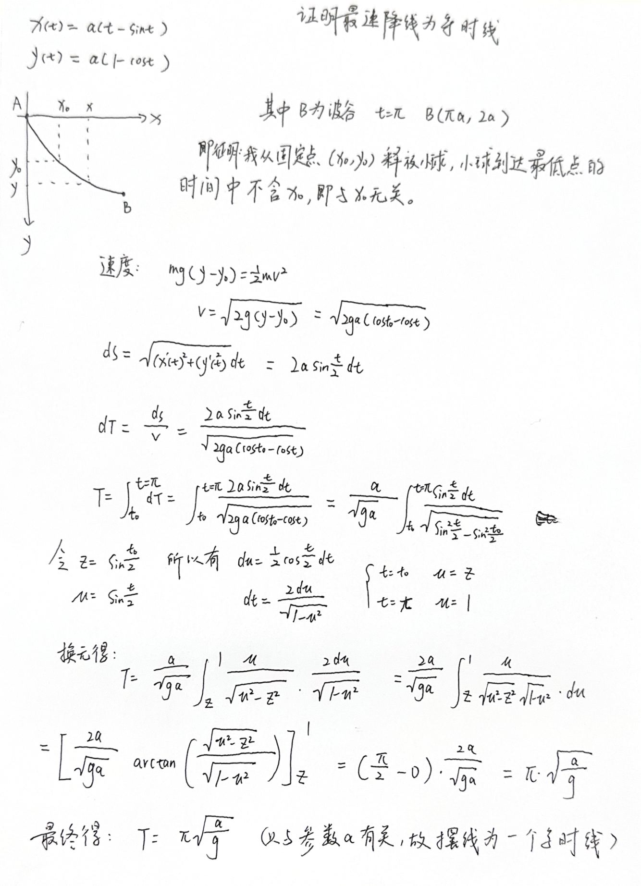

求解最速降线的两种方法：变分法和光类比
1 The brachistochrone problem（最速降线问题）的背景
1696 年，年轻气盛的约翰·伯努利向整个欧洲数学界抛出一道看似简单、实则暗藏杀机的问题：如果一个小球只靠重力、无摩擦地从一点滑到另一点，哪条轨道能让它用时最短？这就是后来著名的“最速降线”问题。表面上看，它像是一道物理题；实际上，它更像一封挑战书。约翰是伯努利家族里的弟弟，一直活在哥哥雅各布的巨大阴影之下，他需要一个足够漂亮的问题来证明自己。于是，数学史上最精彩的一场“公开比武”开始了：弟弟约翰用光学中的费马最短时间原理，把小球的运动想象成光线在不同介质中的折射；哥哥雅各布则给出一种更接近后来变分法精神的解法；而远在英国、已经忙于皇家铸币厂事务的牛顿，收到题目后据说从下午四点一直算到凌晨四点，第二天匿名寄出答案。虽然他解得干净利落，却显然不太享受这场“被点名挑战”的感觉，事后还带着几分不悦地说：“我不喜欢被外国人在数学问题上纠缠和挑衅。”英文原话大意是：I do not love to be dunned and teased by foreigners about mathematical things. 约翰一看到匿名答案，便认出了笔迹背后的气息，留下那句著名的评价：“我从爪印认出了狮子。”最后的答案出人意料：最快的路并不是直线，也不是圆弧，而是一段由圆在直线上滚动时描出的曲线——摆线。这个问题也因此从一场兄弟间、天才间的较量，变成了变分法诞生史上最迷人的序章。
2 欧拉-拉格朗日方程的推导



3 应用变分法解决最速降线问题


4 应用光的类比解决最速降线问题

5 证明最速降线为等时线
最速降线，又叫摆线，轮线，还有一个有趣的性质就是：
在无摩擦、只受重力作用的理想条件下，一个小球从摆线轨道上的任意一点由静止释放，滑到最低点所需的时间都相同。

6 写在最后
在这个 blog 中，我使用了变分法和光的类比的方法去解决最速降线问题，我个人比较喜欢变分法，主要也是没怎么接触过泛函数这个概念，所以觉得有意思。泛函数是一个输入为函数输出为实数的函数，就是以函数为自变量的函数，这是我现在的理解。在推导欧拉-拉格朗日方程的时候，可能有一些关于泛函数的笔误，请多多谅解。
有一个比较大的 bug 是我只是用变分法求出了极值函数，但是并没有说明是极大值函数还是极小值函数。
最后，在这个 blog 中我并没有介绍牛顿的解法，实际上牛顿是用几何方法解决的这个问题，关于牛顿的解法可以参考：https://mathshistory.st-andrews.ac.uk/HistTopics/Brachistochrone/